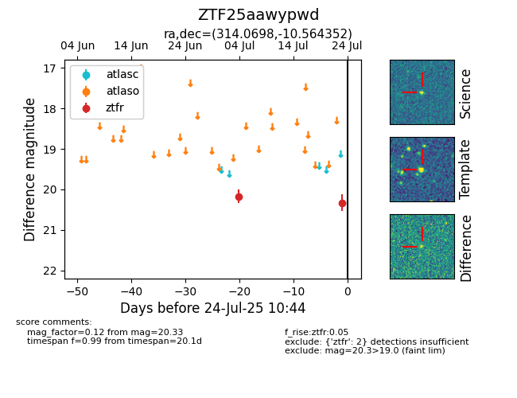

Target ZTF25aawypwd at 2025-07-24 10:44, see:
FINK: fink-portal.org/ZTF25aawypwd
Lasair: lasair-ztf.lsst.ac.uk/objects/ZTF25aawypwd
ALeRCE: alerce.online/object/ZTF25aawypwd
alt names
ZTF25aawypwd (ztf,fink)
coordinates:
equatorial (ra, dec) = (314.0698,-10.56435)
galactic (l, b) = (37.6307,-32.47677)
photometry
last ztfr=20.33
2 ztfr detections
